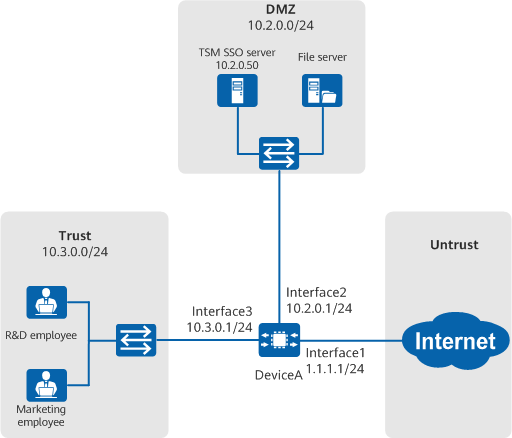

Example for Configuring TSM SSO
Networking Requirements
As shown in Figure 1, an enterprise deploys DeviceA as the egress gateway at the network border to connect the intranet and the Internet. The details are as follows:
- The TSM identity authentication mechanism has been deployed on the intranet, and the TSM SSO server (iMaster NCE-Campus) stores information about users and security groups.
- Users on the enterprise network include R&D and marketing employees.
The network administrator of the enterprise wants to use the user management mechanism provided by DeviceA to identify intranet IP addresses as users and security groups so as to provide reference for performing security group-based network behavior control and network permission assignment. The specific requirements are as follows:
- R&D and marketing employees can access network resources without being authenticated again after their TSM accounts and passwords are authenticated. The identifiers of the R&D and marketing employees are the accounts used in the TSM authentication.
- DeviceA implements policy control based on the organization to which the user belongs, that is, the security group.

In this example, interface1, interface2, and interface3 represent 10GE0/0/1, 10GE0/0/2, and 10GE0/0/3, respectively.

Item |
Data |
Description |
|---|---|---|
TSM SSO server |
|
Configure the TSM SSO server on DeviceA. In other words, set a series of parameters used by DeviceA to communicate with the TSM SSO server. The parameter settings must be the same as those on the TSM SSO server. |
Security group to which the user belongs |
Security group name for R&D employees: research Security group name for marketing employees: marketing |
On DeviceA, create a security group with the same name as that on the TSM SSO server. |
TSM SSO |
TSM SSO: enabled |
Set SSO parameters on DeviceA. |
Configuration Roadmap
This example describes only the configuration of user authentication.
- Add DeviceA to the TSM SSO server and configure the TSM SSO server on DeviceA so that DeviceA can communicate with the server.
- Set TSM SSO parameters on DeviceA.
- Frequent expiration of the online user timeout period during working hours (assuming 8 hours) results in frequent re-authentication on the TSM SSO server. To avoid this, set the online user timeout period to 480 minutes.
Procedure
- Add DeviceA on the TSM SSO server.
On the TSM SSO server, configure the IP address, device name, port, encryption algorithm, access key, and endpoint IPv4 address list of the online behavior management device. The port, encryption algorithm, and access key must be the same as those configured on DeviceA. For details, see the configuration of online behavior management in the iMaster NCE-Campus product documentation.
Protocol version identifier of iMaster NCE-Campus must be set to 100.0 or later.
In the interface configuration procedure on DeviceA, only the VPN instance bound to the interface connected to the TSM SSO server is provided. The VPN configuration for the basic network is not described in this example.
- Configure interfaces on DeviceA.
<HUAWEI> system-view [HUAWEI] sysname DeviceA [DeviceA] interface 10ge 0/0/3 [DeviceA-10GE0/0/3] ip address 10.3.0.1 24 [DeviceA-10GE0/0/3] quit [DeviceA] firewall zone trust [DeviceA-zone-trust] add interface 10ge 0/0/3 [DeviceA-zone-trust] quit [DeviceA] ip vpn-instance vpn1 [DeviceA-vpn-instance-vpn1] route-distinguisher 100:1 [DeviceA-vpn-instance-vpn1-af-ipv4] quit [DeviceA-vpn-instance-vpn1] quit [DeviceA] interface 10ge 0/0/2 [DeviceA-10GE0/0/2] ip binding vpn-instance vpn1 [DeviceA-10GE0/0/2] ip address 10.2.0.1 24 [DeviceA-10GE0/0/2] quit [DeviceA] interface 10ge 0/0/1 [DeviceA-10GE0/0/1] ip address 1.1.1.1 24 [DeviceA-10GE0/0/1] quit [DeviceA] firewall zone untrust [DeviceA-zone-untrust] add interface 10ge 0/0/1 [DeviceA-zone-untrust] quit
- Set the TSM SSO server and SSO parameters on DeviceA.
The TSM SSO server parameters set on DeviceA must be the same as those on the TSM SSO server.
[DeviceA] identity-management [DeviceA-identity-management] sso-tsm [DeviceA-identity-management-sso-tsm] server ip 10.2.0.50 port 8445 shared-key Admin2012@123 vpn-instance vpn1 [DeviceA-identity-management-sso-tsm] tsm-sso enable [DeviceA-identity-management-sso-tsm] local-server ip 10.2.0.1 port 8001 vpn-instance vpn1 [DeviceA-identity-management-sso-tsm] online-user aging-time 480 [DeviceA-identity-management-sso-tsm] quit [DeviceA-identity-management] quit
When iMaster NCE-Campus functions as a TSM SSO server, the server port number is fixed to 8445.
- Create security groups on DeviceA.
[DeviceA] ucl-group name research [DeviceA] ucl-group name marketing
The configured security group name must be the same as that on the TSM SSO server. Otherwise, DeviceA cannot perform policy control based on the security group after obtaining the security group to which the user belongs from the user login message sent by the TSM SSO server.
- Configure the user escape function on DeviceA.
When DeviceA cannot find the user name corresponding to the source IP address of traffic, DeviceA uses the temporary user name and security group to bring the user online.
[DeviceA] ucl-group name group-temp [DeviceA] identity-management [DeviceA-identity-management] temporary-access username user-temp ucl-group group-temp [DeviceA-identity-management] quit
- Configure a security policy to allow users to access the Internet.
[DeviceA] security-policy [DeviceA-policy-security] rule name policy_sec_02 [DeviceA-policy-security-rule-policy_sec_02] source-zone trust [DeviceA-policy-security-rule-policy_sec_02] destination-zone untrust [DeviceA-policy-security-rule-policy_sec_02] user ucl-group research [DeviceA-policy-security-rule-policy_sec_02] user ucl-group marketing [DeviceA-policy-security-rule-policy_sec_02] user ucl-group group-temp [DeviceA-policy-security-rule-policy_sec_02] action permit [DeviceA-policy-security-rule-policy_sec_02] quit [DeviceA-policy-security-rule-policy_sec_02] default action deny [DeviceA-policy-security] quit
Verifying the Configuration
- R&D employees can access network resources after successful logins based on TSM accounts and passwords.
- Marketing employees can access network resources after successful logins based on TSM accounts and passwords.
- Run the display identity-management online-user all-vpn-instance command on DeviceA to view information about online users.
<DeviceA> display identity-management online-user verbose all-vpn-instance Current Total Number: 2 ------------------------------------------------------------------------------- IP Address: 10.3.0.2 User Name : user1 Login Time: 2022-10-27 20:26:05 Online Time 00:07:58 Time-left: 07:52:02 Authentication Mode: TSM SSO Authentication Access Mode: SSO Security Group: research MAC : - VLAN ID : - IMSI : - IMEI : - MSISDN : - User Defined : - -------------------------------------------------------------------------------- IP Address: 10.3.0.3 User Name : user2 Login Time: 2022-10-27 20:26:01 Online Time 00:08:02 Time-left: 07:51:58 Authentication Mode: TSM SSO Authentication Access Mode: SSO Security Group: marketing MAC : - VLAN ID : - IMSI : - IMEI : - MSISDN : - User Defined : - --------------------------------------------------------------------------------
Configuration Scripts
# sysname DeviceA # ip vpn-instance vpn1 route-distinguisher 100:1 # ucl-group name research ucl-group name marketing ucl-group name group-temp # identity-management sso-tsm server ip 10.2.0.50 port 8445 shared-key %$%$|5<h@/062'gA|%:9CO.2/JA8%$%$ vpn-instance vpn1 tsm-sso enable local-server ip 10.2.0.1 port 8001 vpn-instance vpn1 online-user aging-time 480 temporary-access username user-temp ucl-group group-temp # security-policy rule name policy_sec_02 source-zone trust user ucl-group research user ucl-group marketing user ucl-group group-temp destination-zone untrust action permit default action deny # interface 10GE0/0/1 ip address 1.1.1.1 255.255.255.0 # interface 10GE0/0/2 ip binding vpn-instance vpn1 ip address 10.2.0.1 255.255.255.0 # interface 10GE0/0/3 ip address 10.3.0.1 255.255.255.0 # firewall zone trust add interface 10GE0/0/3 # firewall zone untrust add interface 10GE0/0/1 #